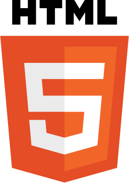
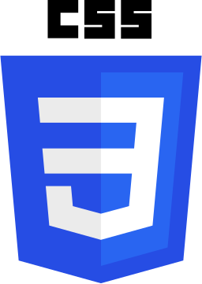
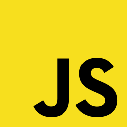
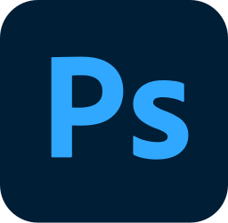
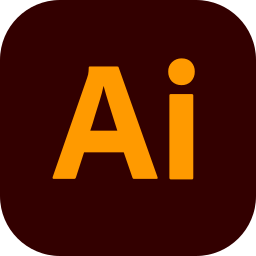

Tech & Creative Stack
Minha especialidade é a intersecção: traduzir requisitos complexos de TI em interfaces limpas, intuitivas e de alto impacto visual.





Meu Workflow
Soft Skills
Pensamento crítico e visão estratégica, Comunicação clara e colaboração interdisciplinar, Resolução de problemas e proatividade, Organização e gestão de prioridades, Adaptabilidade e aprendizado contínuo.
Produto & Estratégia
Discovery & definição de problemas, Mapeamento de oportunidades, Priorização de funcionalidades, Experiência orientada a resultados, Métricas e melhoria contínua.
IA & Inovação
Aplicação de IA no processo de design, Automação de fluxos e geração de insights, Análise assistida por IA, Exploração de novas tecnologias.
UI/UX Design
Figma & Prototipagem, Design Systems, Research & Empatia, Arquitetura da Informação, UX + Inteligência Artificial aplicada ao processo.
Marketing Digital
Estratégia Digital Orientada a Experiência, Pesquisa de comportamento do usuário, Jornada do Usuário e Conversão.
TI & Frontend
Integração Design + Desenvolvimento, Performance Web, Otimização visual, Estrutura de Dados, UX aplicada ao código, Desenvolvimento Web.